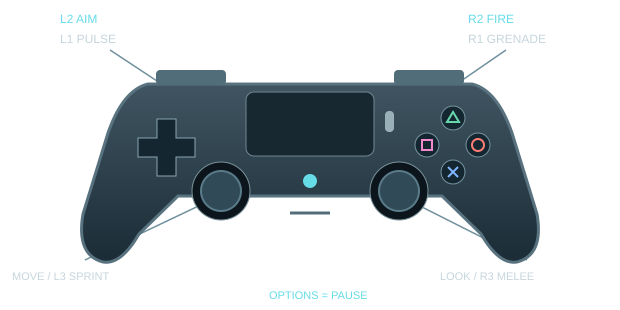

THE KYLEVERSE IS OPEN · v2.5.0
ONE FACE.
A WHOLE LOT
OF TROUBLE.
Charging Kyles. Flying Kyles. Giant, heavily armed, absolutely-not-friendly Kyles. Meet twenty-four upgraded creatures across six facilities, fight through busier routes and build your own overkill.
Single-player · Offline play · PS4 controller + keyboard & mouse
NO LONG INTRO REQUIRED
A little look inside.
Pick a difficulty. Find the route. Stack something ridiculous.
Actual screens and staged in-engine views from v2.5.0.
YOUR OWN ENEMY CAST
Your face. Their problem.
Keep the Kyles—or put a face you have permission to use on the enemy cast. Open Personalize enemies from the title or pause screen.
- Choose: one clear, front-facing Happy JPG/PNG. Focused and Angry photos are optional.
- Preview: check all three expressions and head proportions before you Apply.
- Save & switch: keep multiple named people, choose a portrait from your local gallery, or restore Kyle. Rename with Save name.
Processed and saved only on the game PC. No account or photo upload to a server.
Separate expression photos give the best result. With one photo, missing expressions are approximated and may keep the smile. This is not a 3D scan.
SIX PLACES TO CAUSE A SCENE
New arena. New problems.
Every five encounters, enter a different connected facility.
Distinct rooms, upper floors, moving controls and optional supply routes.
ENCOUNTERS 01—05
Foundry Complex
A tall furnace hall, crane workshop and upper gantries replace identical-looking rooms. Pull the power controls, explore the workshop branch and reach the Smelter Chamber.
FAMILIAR FACE. VERY DIFFERENT ATTITUDES.
Say hello to the Kyles.
From rushing troublemakers to the final Abomination.
Tap any creature for a closer look.
All twenty-four actual v2.5.0 character models, shown with studio lighting and no room background. Studio lighting differs from live gameplay. Arena images show real game locations with staged enemies. The two illustrated cast posters are also available in Pause → Characters.
LESS READING. MORE KYLE.
You're three steps away.
No account. No installer. No homework.
Just a Windows PC and something to shoot with.
- 01
Download & extract
Get the ZIP, right-click it → Extract All. Keep the entire game folder together.
- 02
Launch & pick a difficulty
Open TechSavvyArena.exe. Choose Easy, Normal or Hard before starting a new run.
- 03
Fight. Upgrade. Explore.
Follow the compass, clear encounters and pull the marked power/security controls. After each guardian and upgrade, select Travel.
PS4 / DualShock 4 controller

Use your existing working DS4Windows setup with virtual Xbox 360 / XInput output. Connect your controller by USB or paired Bluetooth before launching. Automatic input prompts switch between keyboard and PlayStation hints; you can also choose either explicitly in Settings.
- L2 / R2
- Aim / fire
- L1 / R1
- Pulse / grenade
- Left stick / L3
- Move / toggle sprint
- Right stick / R3
- Look / melee (click R3)
- ✕ / ○
- Jump / crouch
- □
- Reload / interact
- △
- Switch weapon
- Options
- Pause
Menus: D-pad to move, ✕ select, ○ back. F6 cycles connected controllers if the wrong device is selected. DS4Windows and controller drivers are not bundled. This download runs on Windows, not on a PlayStation console.
Keyboard & mouse
- W A S D
- Move
- Mouse
- Look
- Left / right click
- Fire / aim
- Shift
- Hold to sprint (Toggle in Options)
- Space / C
- Jump / crouch
- R / E
- Interact nearby / otherwise reload
- 1–5 / Tab
- Select gun / next gun
- Q / G
- Pulse / grenade
- V
- Melee
- Escape
- Pause
- F6
- Choose controller
- F12
- Screenshot
Stay alive & get stronger
Follow the compass. Its independently smoothed arrow follows the walkable route, not a line through walls. Written instructions stay at top left. Hide it in Gameplay & comfort if you prefer. When only a few required foes remain, it can guide you toward them.
Watch the route. Small pursuit packs can attack between objectives, so the walk to the next room is part of the fight. Clear a path, keep moving and use cover; these optional enemies do not replace mission targets.
Work the controls. Approach the marked breaker, lever or valve on the correct floor, keep its handle in view, then press E / R / □. If it arms a room encounter, the enemies come out when you operate it—there is no second activation dot to find. Moving parts and lights show the result.
Use cover. Move clear of marked slams, mortar triangles and siege volleys before they land. R3 (click the right stick) or V delivers a 65-damage melee strike. Melee, Pulse and chain hits respect solid cover—get a clear angle.
Break their gear. Shoot exposed heads, mounted weapons, armor and tentacles. Disabling components reduces what the enemy can do.
Keep the supplies. Collected reserve ammo and grenades have no gameplay storage cap, and excess stock survives refills and checkpoints. You still spend ammo and grenades, and magazines still need reloading. Passive grenade regeneration fills up to five; pickups can take you beyond five. Health starts recovering after six seconds without damage.
Stack upgrades. Pick one of three choices between encounters. All eight benefits have unlimited ranks during the finite campaign. Bigger Magazines increases all five guns' clip capacities; Hot Barrel boosts damage; Ammo Economy increases ammo pickup quantities and free-shot chance.
Checkpoints. Arrival, Travel, upgrade choices and required route objectives save at encounter boundaries. Only CHECKPOINT SAVED confirms success; moving a lever alone does not. Continue restores the saved encounter, upgrades and supplies—not every step or mid-fight kill. A new run replaces that campaign checkpoint. Menus and loss of focus pause game clocks.
Weapons, music & easier settings
Your arsenal: AR-30 rifle, Breach shotgun, ARC shock blaster, Ion Lance piercer and Singularity launcher. Switch with △ or Tab, or select directly with 1–5; upgrade benefits carry across the applicable weapons.
Your soundtrack: eighteen local tracks across Melodic techno, Soft ambient, Drum & bass, Synthwave / darksynth, Industrial rock and Classical / cinematic. Choose a station in Audio to hear it immediately, shuffle its tracks or skip to the next one. All music ships with the game—no streaming or separate demo button.
Five short settings pages. Open Audio, Controls, Gameplay & comfort, Graphics & display, or How to play from the settings hub. Back to settings, Escape or ○ returns to the hub before leaving Options. Slider drags save on release. Pause → Characters opens both Kyle cast posters.
Make your face look its best
Start with a sharp photo. Use a front-facing JPG/PNG under 20 MB, even lighting and an unobstructed face. Avoid tiny screenshots, strong head tilts, sunglasses or a hand over the face. For Happy, smile with your teeth visible.
Optional expressions: use the same lighting and angle for a relaxed, closed-mouth Focused photo and a frown/scowl for Angry. Teeth are fine in the Angry photo. Separate photos preserve those actual expressions; a single Happy photo cannot recreate an unseen mouth exactly.
Nothing changes until Apply. Generate the preview, inspect and turn the heads, then apply only when you like the result. Name each person; adding another keeps your existing saved people. Choose a name and portrait in the gallery to switch. To rename a selected person, enter the name and choose Save name.
You stay in control. Saved people and names survive reopening the game. Restore Kyle keeps your gallery for later. Deleting asks for confirmation and removes only the selected person—not the others. Originals and separate backups stay untouched. These are face choices, not separate accounts: campaign progress and settings are shared.
Personalization runs locally with the included FacePersonalizer folder. Only use your own face or a photo you have permission to use. Personal profiles are not included in this public download.
PC requirements, performance & updating
Windows 10/11, 64-bit. This release uses Godot's Forward+ Vulkan renderer and needs compatible graphics hardware and drivers. Tested on an NVIDIA RTX 4060 Laptop GPU; broad minimum-spec testing is not complete. Not a Mac, phone, browser or console build.
Match settings to your PC. Native character animation, pooled effects and startup shader preparation help keep combat smooth. Initial loading can take a moment. Performance varies with hardware, graphics settings, room and enemy load; testing is not a locked-60-FPS guarantee or a complete human playthrough.
Updating from v2.4? Extract this release into a new folder. v2.5 keeps the same local checkpoint, settings and named face library as the full-roster v2.4 build. v2.2 and earlier: those games use separate local data; this release does not silently import their progress or portraits. Keep the older installation for that campaign. Back up local data before switching builds.
No sound? Bring the game into focus, check the Windows volume mixer and Audio settings. Music intentionally stops when the game loses focus.
No controller / double inputs? Confirm DS4Windows shows a connected controller with virtual Xbox 360 output. Start with one controller and one mapper; use F6 if needed. Never install drivers from an unknown download site.
Can't launch? Extract the ZIP first; keep the .exe, .pck and the entire FacePersonalizer folder together. Update GPU drivers from the manufacturer. The executable is unsigned, so Windows may show a reputation warning. Verify the source/checksum and scan the download; do not disable security protections.
Local, single-player game. Friends download and play on their own PCs. There is no online co-op, account, leaderboard server or telemetry in this website.
YOUR INVITATION TO THE KYLEVERSE
Ready to meet yourself?
TechSavvy Arena v2.5.0 · Windows 64-bit · 1,281 MB ZIP
Download the gameExtract the entire folder.
Run TechSavvyArena.exe.
No account required.
Use a new folder when updating. v2.4 progress and saved people are retained; v2.2 and earlier data stays separate. See compatibility notes above.
Built for friends.
Filled with Kyles.
Or you.
FROM THE FIRST KYLE TO TODAYPrevious versions
Browse the earlier builds from the game's history. These are older packages—not the current version pictured above. Previews and experiments are labeled separately.
v2.4.0 ↗ · v2.2.0 ↗ · v2.1.0 ↗ · Browse the archived downloads ↗ · v0.13.2 ↗ · v0.11.0 ↗
Keep each download in its own folder. Do not overwrite an installed game. Save formats and features vary; separate game folders do not necessarily mean separate save storage. Back up your progress before switching builds, and do not assume saves are interchangeable.
Historical builds were checked for archive integrity and distribution contents, not newly playtested. Old bugs may remain. v0.6.1 is an unshipped experiment; the Realism and Reactor Expedition previews are not full campaigns.